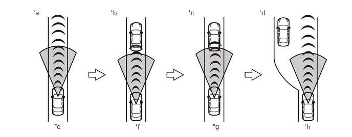

概要
动态雷达巡航控制系统旨在通过将车辆控制在驾驶员选择的车速来缓解驾驶员疲劳。一旦将动态雷达巡航控制系统设定为所需车速，无需进行任何加速踏板操作，ECM（汽油车型）或混合动力车辆控制 ECU（HV 车型）即可自动调节原动力以维持设定车速。
动态雷达巡航控制系统有两种巡航控制模式：定速控制模式和车距控制模式。
| 模式 | 概要 |
|---|---|
| 定速控制模式 | 在定速控制模式下，系统对比实际车速和设定车速并控制原动力。
·
如果车速高于设定车速，则系统通过调节各自的原动力使车辆减速。 ·
如果车速低于设定车速，则系统通过调节各自的原动力使车辆加速。 |
| 车距控制模式 | 在车距控制模式下，系统检测并识别前方车辆。因此，系统可根据车速保持适当的车距，并允许车辆在跟车控制下行驶。
·
驾驶员可操作方向盘装饰盖开关总成上的车距控制开关来选择 3 种级别的车距：长距、中距和短距。 ·
此模式主要包含 4 种控制：定速控制、减速控制、跟车控制和加速控制。 |
在车距控制模式下，下图显示本车以 100 km/h (62 mph) 的速度行驶且前方车辆以 80 km/h (50 mph) 的速度行驶情况下的控制示例。

| *a | 定速控制 | *b | 减速控制 |
| *c | 跟车控制 | *d | 加速控制 |
| *e | 100 km/h (62 mph) | *f | 自 100 km/h (62 mph) 至 80 km/h (50 mph) |
| *g | 80 km/h (50 mph) | *h | 自 80 km/h (50 mph) 至 100 km/h (62 mph) |
注意事项
使用车距控制时，请遵守以下注意事项：
车距控制是在高速公路或交通不拥挤的道路上使用的一种车速控制设备。
请勿过度依赖车距控制。车距控制程度有一定的局限性。务必谨慎驾驶、注意周围环境和与前方车辆间的距离，并且适时使用加速踏板和制动踏板以与其他车辆保持适当距离。
车距控制并不能使车辆完全停止。尽管可以自动施加制动，但所施加的制动控制程度有一定的局限性。在某些情况下，例如前方车辆急剧减速或另一车辆突然超车，自动减速将难以保持安全距离。在这些情况下，蜂鸣器和显示屏将警告驾驶员人工施加制动。
车距控制并非防碰撞系统，不能因此而粗心驾驶。
为避免严重伤害甚至死亡，在以下路况时请勿使用车距控制。检测到恶劣的天气条件时，车距控制可能自动取消。
在恶劣天气（例如雨、雾、雪、沙尘暴等）下，可能无法准确测量车距。
雨滴或雪花覆盖住毫米波雷达传感器总成前方的徽标时，可能无法准确测量车距。
挡风玻璃被雨滴或雪花覆盖时，可能无法准确测量车距。
在交通拥挤的道路或急转弯处，可能无法保持合适的车速，从而导致严重伤害甚至死亡。
在打滑路面（结冰或积雪覆盖的道路）上，轮胎可能打滑，从而导致失去控制。
在陡峭的下坡路上，如果不能检测到前方车辆，发动机制动不足可能会导致超过预定速度，以致于造成严重伤害甚至死亡。即使检测到前方有车辆，减速时间的迟滞可能导致严重伤害甚至死亡。
车辆行驶中反复加速和减速。
使用车距控制且紧跟在速度较低的车辆后时，车辆从高速公路的主干道出来进入立体交叉道、服务区、驻车区等时，传感器可能无法检测到前方车辆，因此车速可能会加速至设定速度。这样可能导致严重伤害甚至死亡。
在陡而短的上下坡路面上行驶时，传感器可能无法检测到前方车辆并且可能过度缩短车距。这样可能导致严重伤害甚至死亡。
挂车牵引可能导致性能下降。
蜂鸣器频繁鸣响时，请勿使用车距控制。
某些情况下，难以检测或无法检测到车辆。由于车距控制主要通过检测前方车辆的反射器来工作，所以在下列情况下可能无法准确检测距离，从而导致车距判定不准确。
前方车辆或相邻车道的车辆溅起水或雪。
前方车辆的后部较小，如空的拖车或摩托车。
行李箱内或后排座椅上方装载大量行李导致车辆头部抬起。
前方车辆离地间隙极大。
根据道路的弯曲程度和车辆的操控方式，可能会暂时检测到附近车辆和物体，检测正前方车辆失败可能导致接近警告激活或车距缩短。
毫米波雷达传感器总成可自动检测车辆毫米雷达波传感器总成前部徽标上粘附的脏污，如果检测到脏污，则在多信息显示屏上显示警告代码。但是，如果毫米雷达波传感器总成前部徽标由于透明或半透明的塑料袋、冰等变模糊，则可能无法检测到脏污，从而导致车距判定不准确。继续驾驶时一定要小心。如果检测到脏污，则车距控制自动取消。务必使毫米雷达波传感器总成前部徽标保持清洁。
如果前方车辆停止或缓慢行驶，则减速控制和接近警告将不工作。在收费站、缓冲区等地点应多加小心，注意停止或缓慢行驶的车辆。
由于毫米波雷达总成的检测区域有限，车辆突然近距离超车可能会导致检测延迟，且机车在车道外行驶可能导致检测失败。因此，系统可能无法保持适当的车距。
为避免意外启用车距控制，不使用车距控制时请关闭主开关。
车距控制（跟车控制）工作时，根据前方车辆速度调节车速，且使用巡航控制主开关提高设定速度将不会使车辆加速。但是，提高设定速度时，如果前方车辆离开车道，则车速可能突然提高。确认多信息显示屏上的设置。
选择车距时应考虑到交通状况。车辆以 80 km/h (50 mph) 的速度行驶时，各车距设定的大致距离如下所示：
长距：约 50 m (160 ft.)
中距：约 40 m (130 ft.)
短距：约 30 m (100 ft.)
如果车速低于 80 km/h (50 mph)，则距离将短于上述距离。
下坡时，车距可能短于所选距离。
在下列情况下，即使车辆靠近前方车辆，接近警告也可能不激活：
前方车辆以几乎相同的速度巡航。
前方车辆以更快的速度巡航。
刚刚设定速度后。
踩下加速踏板。
刚刚松开加速踏板。
在车距控制模式下巡航时，如果主警告灯点亮、蜂鸣器鸣响且显示屏上显示警告代码、警告信息，则系统可能存在故障。尽管可以继续安全行驶，但请联系丰田经销店进行检查。
为确保行驶时车距控制功能正常，请遵守以下注意事项：
务必使毫米雷达波传感器总成前部徽标保持清洁。清洁时，使用软布且小心不要损坏徽标。
请勿拆解传感器或使传感器或其周围区域受到强烈冲击。否则将导致传感器故障。
不要在毫米波雷达传感器总成周围粘贴贴纸（包括透明贴纸）或安装装饰件。这样将导致毫米波雷达传感器总成故障。
保持前向识别摄像机安装区域周围的挡风玻璃清洁。前向识别摄像机的性能可能因挡风玻璃上的脏污、雨滴、冷凝或雪受到影响。
不要使前向识别摄像机受到强烈冲击。
不要将贴纸、标签或装饰件粘附到挡风玻璃上。
不要拆下前向识别摄像机。由于前向识别摄像机的校对为精确调节，因此重新安装前向识别摄像机后必须进行角度调节，否则前向识别摄像机可能无法正确识别车道标识。
如果挡风玻璃起雾，则使用挡风玻璃除雾器除雾。天气寒冷时，使用加热器向脚部吹气可能会使挡风玻璃上部起雾。这将对可视性产生不利影响。
不要触摸前向识别摄像机的透镜。透镜上残留的指印可能会导致检测不准确或无法检测，并可能无法准确检测车道标识。
不要在仪表板上放置任何反光物体。
定速控制下，如果车辆距前方车辆太近而无法检测到前方有无车辆以及车距，则蜂鸣器不会鸣响以警告驾驶员。与前方车辆保持安全距离。
车距控制模式和定速控制模式均可用不同方式控制车辆。使用车距控制时，务必确认组合仪表总成显示屏上的所选模式。
如果前保险杠或格栅受到冲击，则可能无法准确进行车距控制。